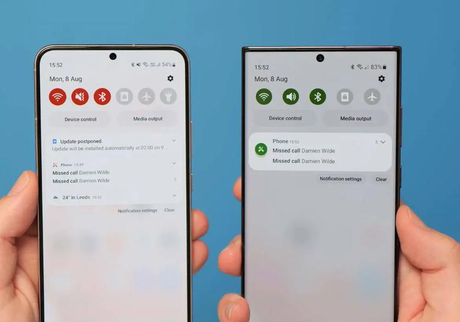

Novidades para Discord
É comum, que ao utilizar o aplicativo do Discord, o usuário perceba um atraso com a chegada de notificações. Também é comum receber uma mensagem dizendo que a próxima atualização da plataforma vai ser disponibilizada para o Android em breve, enquanto o iOS é priorizado. O Discord trouxe uma grande atualização no dia 1° de agosto deste ano. Na modernização, a equipe da plataforma criou uma estrutura de desenvolvimento aprimorada para a versão do Android.
Android 13
A Samsung finalmente lançou o beta do One UI 5.0, nova versão do seu software baseado no Android 13. Para dar uma espiadinha no que ele reserva para os usuários, é preciso se cadastrar no programa beta da Samsung. Porém, algumas das principais novidades foram divulgadas em sites especializados que já estão testando a ferramenta, como o 9to5Google e o XDA Developers. Confira aqui algumas das melhorias que estão sendo testadas na One UI 5.0 e devem chegar a mais celulares da Samsung em breve.